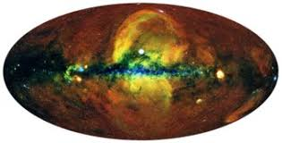
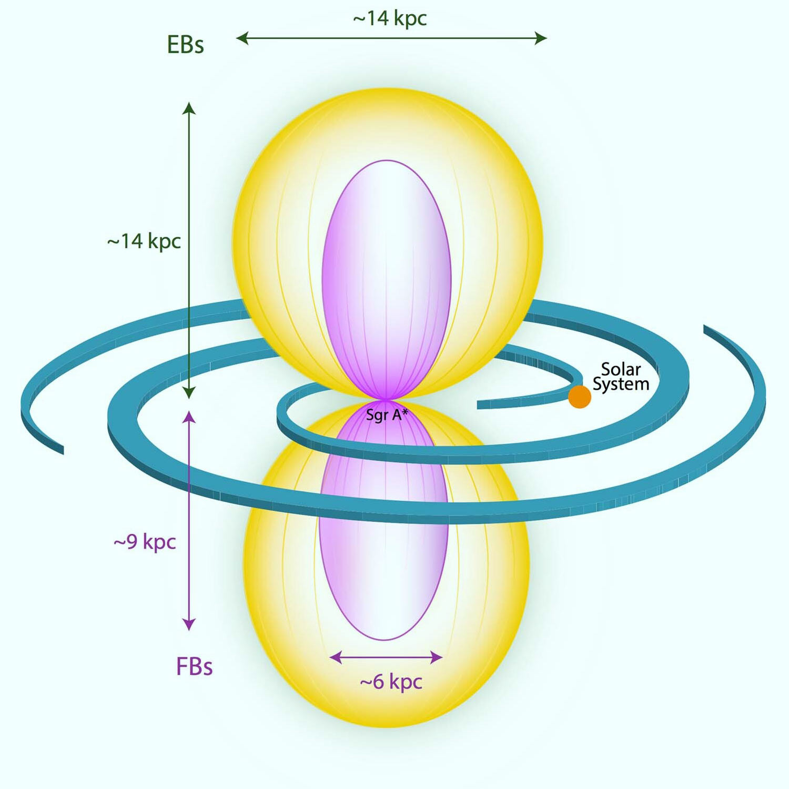
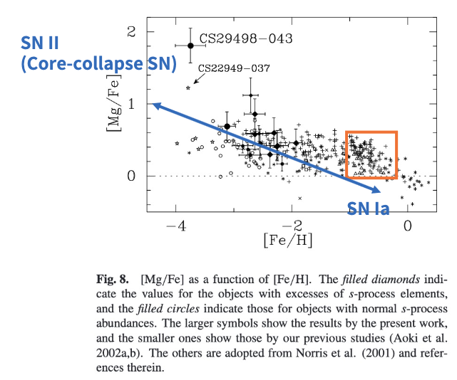

Analysis of Illustris-TNG Data Suggests Fermi/eROSITA Bubble is ANG-like
Introduction
The Fermi Bubbles are a pair of giant gamma-ray emitting lobes extending from the center of the Milky Way. They were discovered in 2010 by the Fermi Gamma-ray Space Telescope. The bubbles are believed to be the result of a past energetic event in the Galactic Center, such as a burst of star formation or a nuclear outburst powered by the supermassive black hole Sagittarius A*.
The debate over whether it originated from an AGN or a supernova explosion is still ongoing and inconclusive.
フェルミ・バブルは、天の川の中心から伸びる巨大なガンマ線を放射する一対のローブである。2010年にフェルミ・ガンマ線宇宙望遠鏡によって発見された。この気泡は、銀河系中心部で過去に起こった星形成のバーストや、超巨大ブラックホール「いて座A*」による核爆発のようなエネルギッシュな出来事の結果であると考えられている。
AGNに由来するのか、それとも超新星爆発に由来するのかについての議論はまだ続いており、結論は出ていない。


Method
α元素の比較 (Comparison of α elements)
- 太陽近傍にある星に対するMgとFeの組成比 [Mg/Fe] と [Fe/H] の関係
- MgはII型超新星から、FeはIa型超新星から主に放出されるので、縦軸の [Mg/Fe] は両超新星爆発の割合に依存した組成比になる。

Note
Wako Aoki, John E. Norris, Sean G. Ryan, Timothy C. Beers, Hiroyasu Ando, Subaru/HDS Study of the Extremely Metal-Poor Star CS 29498-043: Abundance Analysis Details and Comparison with Other Carbon-Rich Objects , Publications of the Astronomical Society of Japan, Volume 54, Issue 6, 25 December 2002, Pages 933ˑ949,
 https://doi.org/10.1093/pasj/54.6.933
https://doi.org/10.1093/pasj/54.6.933
この図から以下のことがいえる。
- 金属量が [Fe/H] < 1 と太陽の値の10分の1未満の星では [Mg/Fe] > 0 となり、このような星を作る